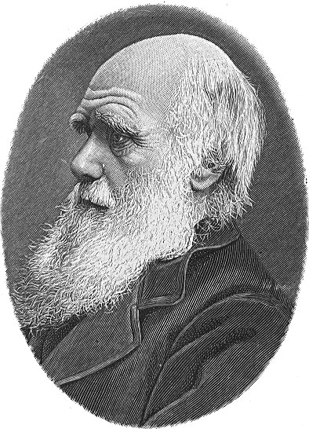

Ensiklopedia Sejarah Dunia
Kisah Kehidupan
Sebagian besar tanaman dan hewan yang hidup pada zaman prasejarah berbeda dengan yang ada saat ini. Hal ini terjadi karena sebagian dari mereka telah punah, sementara yang sebagian lagi berubah seiringnya waktu.
Makhluk hidup pertama di Bumi adalah hewan yang sangat sederhana. Mereka, selama jutaan tahun, berubah, atau berevolusi, menjadi hewan jenis baru. Proses perubahan ini disebut evolusi.
Proses evolusi
Orang pertama yang menjelaskan proses evolusi adalah ilmuwan bernama Charles Darwin (1809-1882). Penjelasan mengenai proses evolusi masih diterima oleh ilmuwan sampai saat ini.
Darwin menyadari tidak ada dua hewan yang sama persis. Misalnya, rusa yang satu memiliki kaki yang lebih panjang daripada rusa lainnya. Kaki yang panjang berguna untuk menghindari pemangsa sehingga rusa memiliki kesempatan yang lebih besar untuk bertahan hidup dan berkembang biak. Anaknya juga mungkin memiliki kaki yang lebih panjang seperti induknya. Lambat laun, akan muncul jenis rusa baru dengan kaki yang lebih panjang.
Petunjuk dari fosil
Semua fosil tertua yang ditemukan memiliki bentuk kehidupan yang sangat sederhana. Fosil makhluk yang lebih kompleks, seperti reptil dan burung, hanya ditemukan di lapisan bebatuan yang lebih baru. Hal ini menunjukkan bahwa makhluk hidup tidak muncul di Bumi secara bersamaan. Jadi, mereka berevolusi secara bertahap.
Famili (suku) hewan
Untuk memahami bagaimana salah satu jenis hewan berevolusi, ilmuwan perlu menemukan hewan mana saja yang terkait. Caranya dengan membagi mereka ke dalam beberapa kelompok.
Seluruh anggota dalam satu kelompok memiliki suatu kesamaan satu sama lain. Semakin mirip antara dua hewan, hubungannya akan semakin erat. Kelompok terbesar disebut kingdom (kerajaan). Misalnya, semua jenis hewan termasuk ke dalam kingdom animalia. Dalam kingdom ini, ada kelompok yang lebih kecil, dan di dalamnya ada kelompok yang lebih kecil.
Kelompok yang paling kecil disebut spesies. Hewan dalam satu spesies memiliki kemiripan rupa dan dapat saling berkembang biak.
Penamaan spesies
Para ilmuwan telah memberikan nama khusus kepada setiap spesies tanaman dan hewan, yang ditulis dalam bahasa Latin dan mendeskripsikan satu spesies dengan sangat jelas. Contohnya, manusia pertama yang berjalan tegak dinamakan Homo erectus, yang artinya "manusia yang berdiri tegak".